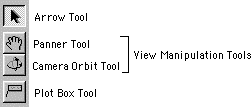
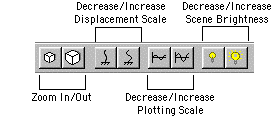
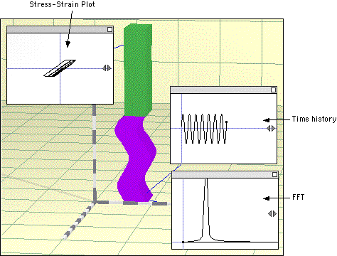
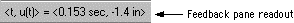
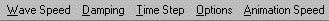
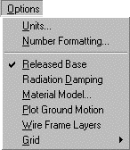
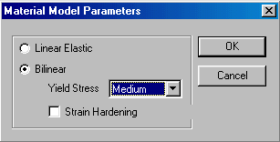
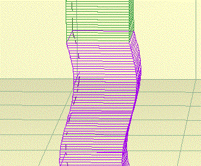
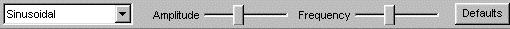
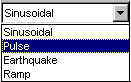

Dr. Layer
1.0
User's
Guide
Welcome to Dr. Layer 1.0. This User's Guide is designed to provide a brief overview of what Dr. Layer can do, and to present the basic mechanisms for using the program. Virtually all the functionality of the program is also presented in the accompanying exercises, and since the exercises present the program features in the context of the underlying concepts and principles, they provide the recommended way to be introduced to the program. The material here is useful for quick reference and review, and presumes a reasonable knowledge of wave propagation modeling and analysis.
General Operation
Dr. Layer's operation is controlled via menu commands (with associated keyboard accelerators), manipulation tools, scale buttons, the load tool bar, and time control buttons. The program displays the results of its calculations visually in the form of animated displacements, and also in the form of dynamically generated time history plots. There are also mechanisms for getting numerical values.
The simplest way to see the program in action is to simply start it up and press and hold down the 'g' key (for "go") on the keyboard. This causes time to run forward, and one can observe the corresponding wave propagation for the default program configuration.
BACK TO TOP
Time Control
Time can be controlled using either the keyboard or the time control buttons:
- To run time forward: Press and hold the 'g' key or click and
hold the time forward button:
 .
. - To reset time to zero: Type the '0' key or click on the time reset button:.
- The current analysis time is displayed in the feedback pane at the bottom of the screen.
- The analysis time step size can be controlled via the Time Step menu (there are combinations of material properties and time steps that intentionally lead to unstable results, so beware).
- The display time step can be controlled via the Animation Speed menu. Internally, this command controls how many analysis time steps are computed between screen updates.
BACK TO TOP
Manipulation Tools
Dr. Layer's tool palette is illustrated below (Windows version: the Mac version is similar but grouped a bit differently):

- The Arrow Tool is used to select and manipulate objects.
- The Panner and Camera Orbit Tools are used to change the viewing point and camera orientation via clicking and dragging.
- The Plot Box Tool is used to create
one of the various types of plot boxes:
- Displacement time history plots are created by clicking on the relevant layer. The top node in the layer is used as the plotting target.
- Fast Fourier Transform (FFT) plots of a displacement history can be created by clicking on the time history plot.
- Stress-strain plots can be created by control-clicking (i.e., holding down the control key while clicking) on the desired layer.
BACK TO TOP
Scaling Buttons
Dr. Layer has a suite of scaling buttons for adjusting various aspects of the display. The Windows version scaling toolbar is shown below (again, the Mac version has the same tools, but uses a different grouping):

These controls are self-explanatory in regards to their functions. Note the following, however:
The scaling buttons will continue to scale as long as they are held down. It is not necessary to click multiple times to get this effect.
The Zoom In/Out functionality is also available via the keyboard: type and hold 'a' to zoom in, and 'A' (i.e., shift-A) to zoom out.
BACK TO TOP
Plot Boxes
Plot boxes are used by Dr. Layer to display various characteristics of a given layer motion. There are three types of plot boxes available:
- Displacement time history plots show the displacement of the top point of the layer to which they are attached as a function of time.
- Fast Fourier Transform (FFT) plots display the frequency content of the displacement time history to which they are attached.
- Stress-strain plots show the stress-strain response of the top material element within the layer to which it is attached.
The figure below shows an example of each of these plot boxes:

- To create a plot box, use the Plot Box Tool to click (or control-click in the case of a stress-strain plot) on the desired layer or plot.
- To relocate a plot box, click and drag it by either its gray header bar or its bottom/side outline border.
- To remove a plot box, click in the close box on the right side of the header bar, or click anywhere on the plot box to select it, and then type the Delete key.
- To see a numerical value for a displacement time history, click on the plot at the desired location, and the corresponding time/displacement values will be displayed in the feedback pane at the bottom of the screen:

- To adjust the plotting scales, use the small expansion/contraction triangular buttons on the plot for the horizontal scale, and the plot scale buttons on the Scale Button Toolbar for the vertical scale.
- To adjust the horizontal offset of a plot, click in the plot and drag horizontally to scroll back and forth.
You will notice that all plots scale together. This is so that plots of a given type can be compared visually without any misleading differences in scale factors.
- Plot boxes can be added or removed at any time, but they only accumulate data beginning from the time they are installed, with the exception of FFT plots, which always plot the according to the data accumulated in the target time history. FFT plots can use up to the first 1024 points in a time history.
In general, plots will automatically scroll as necessary as time is running. Once you have manually scrolled a plot, though, the automatic scrolling will cease until time is reset to zero.
|
|
|
BACK TO TOP
Menu Commands
Dr. Layer has a number of application-specific menu commands. The relevant portion of the menu bar is shown below:

- Wave Speed settings are layer-specific: to assign a particular layer a new wave speed, select it using the Arrow Tool, and then choose the desired wave speed from the Wave Speed menu. Multiple layers can be selected by shift-clicking, and all layers can be selected quickly via the Select All Layers command in the Edit menu (Ctrl-A/Cmd-A keyboard accelerator).
- Damping settings are global: i.e., they are applied uniformly to all layers.
- Time Step settings control the size of the time step used for the numerical integration.
|
|
As mentioned above, there are unstable combinations of material properties and time steps built into the program intentionally. If you observe the layers disappearing from view, stop time running, reset, and choose a smaller time step. |
- Animation Speed settings control the frequency at which screen updates are drawn. At the slowest setting, Dr. Layer redraws the scene after every time step. At the faster settings, the redrawing occurs less frequently.
- The Options menu contains a variety of commands and settings. The menu itself is shown below:

- The Units and Number Formatting commands bring up dialogs for choosing units and significant figure display.
- The Released Base option is only available for Pulse and Ramp Loads. After the pulse or ramp load has been applied, the base node will be given a stress-free boundary condition, and so both the top an bottom of the layer assemblage will reflect waves in the same manner.
- The Radiation Damping option is only available in combination with the Released Base option. The base node is given a special damping value that models a semi-infinite layer: i.e., the boundary reflection is minimized.
- The Material Model command brings up the dialog box shown below, which can be used to set material behavior parameters. Note that the elastic stiffness and density values are set implictly via the Wave Speed menu commands.

- The Plot Ground Motion command causes a plot box to be attached to the base node of the layer stack. Such a plot box already exists by default, but in the event it gets deleted, this command will cause a new one to be installed.
- The Wire Frame Layers command results in the layer display showing a mesh rather than solid colors. This can be useful to see certain aspects of a motion more clearly. A zoomed-in view of a wire mesh depiction is shown below:

- The Grid popup menu allows one to adjust aspects of the background grid.
BACK TO TOP
Load Tool Bar
The ground motion can be set and controlled via the Load Tool Bar, the Windows version of which is shown below:

- The Load Popup allows you to choose any of the four built-in ground motions indicated below. The Sinusoidal, Pulse, and Ramp loadings are all displacement controlled, while the Earthquake load is acceleration based.

- The Amplitude and Frequency sliders can be used to adjust the characteristics of the ground motion. In the case of the Earthquake load, modifying the amplitude will cause the earthquake record data to be scaled, while modifying the frequency will cause the record data's dt to be modified. This effectively makes the earthquake run faster or slower than it did originally.
- The Defaults button returns the Amplitude and Frequncy settings to their original values.
The Earthquake selection actually causes the file named "EQData.txt" to be read in and used as an acceleration record to generate the base node motion. This means you can use any custom input acceleration record you wish by simply naming it "EQData.txt" and putting it in the Dr. Layer folder.
Last
Updated:
11/21/00
Contact us at: parduino@u.washington.edu